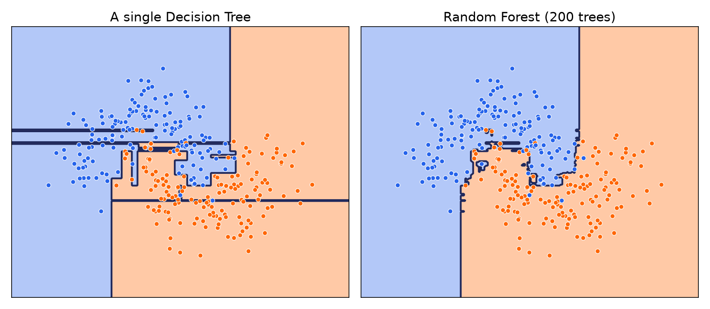
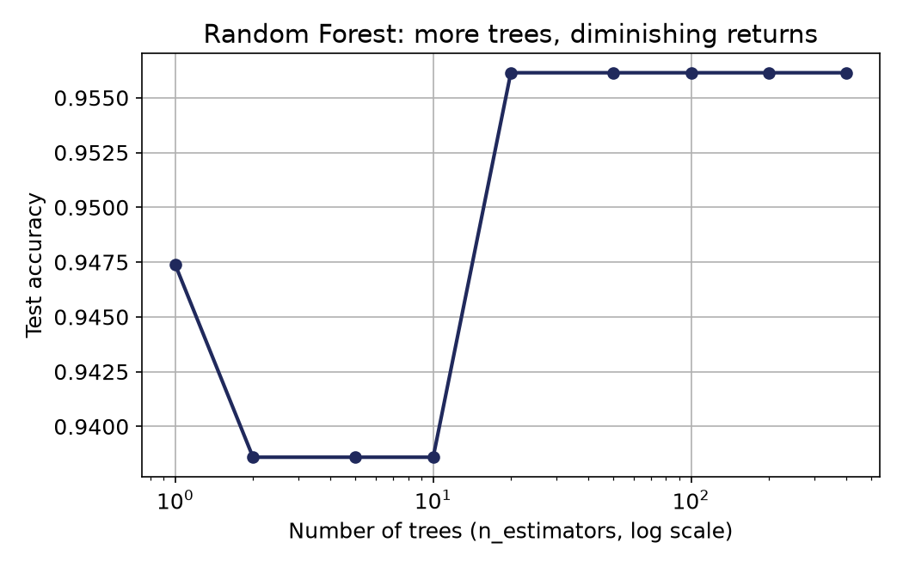
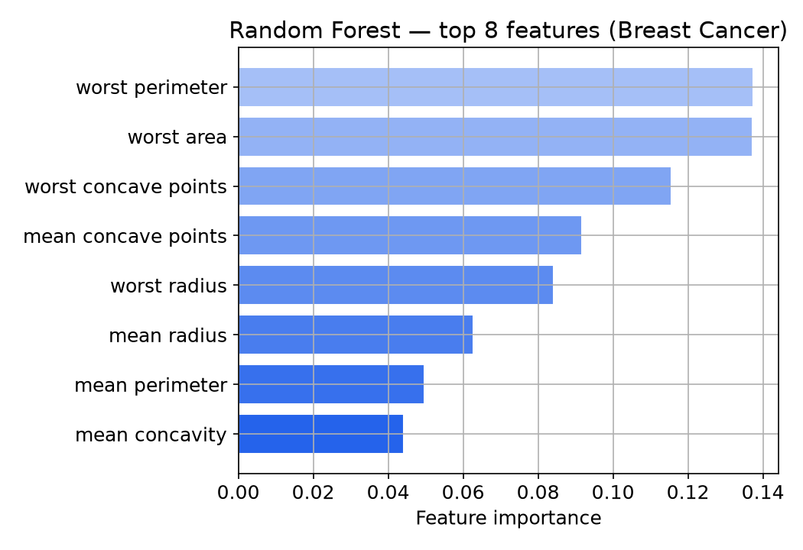

۱درختهای متفاوت بهجای یک درخت، صدها درخت میسازیم.
۲نمونههای تصادفی (Bagging): هر درخت روی یک نمونهی تصادفی (با جایگزینی) از داده ساخته میشود؛ در هر شکاف هم فقط زیرمجموعهی تصادفی از ویژگیها دیده میشود.
۳رأیگیری (Voting): برای پیشبینی نهایی، از همهی درختها رأی میگیریم و اکثریت را انتخاب میکنیم.
قدم ۱ و ۲ با عدد واقعی
مسئله ۱۴ روز Play Tennis، اینبار بهصورت جنگل
برای شهود، فرض کنید جنگل ما فقط ۳ درخت دارد. هر درخت روی یک نمونهی تصادفی با جایگزینی از همان ۱۴ روز آموزش دیده، و در تنها شکافش، فقط بین ۲ ویژگی تصادفی (نه هر سه) بهترین سؤال را انتخاب کرده است.
درخت ۱ · نمونهی A
Wind?
Weak (5Y·2N)
Yes
Strong (2Y·5N)
No
از بین Outlook و Wind، تصادفی همین دو در دسترس بودند؛ Wind بیشترین کاهش Gini را داد.
درخت ۲ · نمونهی B
Outlook?
Sunny (3Y·4N)
No
Overcast (3Y·0N)
Yes
Rain (3Y·1N)
Yes
از بین Wind و Outlook، تصادفی همین دو در دسترس بودند؛ Outlook بیشترین کاهش Gini را داد.
درخت ۳ · نمونهی C
Humidity?
Normal (7Y·0N)
Yes
High (3Y·4N)
No
از بین Wind و Humidity، تصادفی همین دو در دسترس بودند؛ Humidity بیشترین کاهش Gini را داد.
سه نمونهی متفاوت (قدم ۲)، سه سؤال متفاوت در ریشه؛ دقیقاً همان تصادفیبودنی که «درختهای متفاوت» (قدم ۱) را میسازد.
قدم ۳ با عدد واقعی
یک روز جدید میرسد: رأیگیری بین همین ۳ درخت
روز جدید: Outlook = Sunny, Humidity = Normal, Wind = Weak
درخت ۱
Wind = Weak
Yes
درخت ۲
Outlook = Sunny
No
درخت ۳
Humidity = Normal
Yes
۲ رأی Yes در برابر ۱ رأی No
← جنگل تصادفی پیشبینی میکند: Yes
درخت ۲ اینبار تنها ماند؛ چون خطای تکتک درختها با هم همراستا نیست، رأی اکثریت آن را خنثی کرد. همین رفتار، در مقیاس صدها درخت، دلیل قدرت جنگل تصادفی است.
چرا کار میکند
خطاهای تصادفی، همدیگر را خنثی میکنند
تکتک درختها ممکن است ضعیف و بیشبرازشکرده باشند، اما خطاهایشان معمولاً با هم همراستا نیستند.
رأیگیری این خطاهای تصادفی را خنثی میکند و یک مدل قویتر و پایدارتر میسازد.
دیدن اثر
یک درخت در برابر جنگل تصادفی

مرز جنگل تصادفی، بهطور معمول صافتر و پایدارتر از مرز یک درخت تنهاست و روی دادهی تست بهتر تعمیم مییابد.
آزمایش
اثر n_estimators

دقت با افزایش تعداد درختها بالا میرود، اما بعد از یک نقطه، ثابت میماند؛ درخت بیشتر معمولاً ضرر ندارد، فقط از یک جا به بعد سود چندانی هم ندارد.
یک مزیت اضافه
اهمیت ویژگیها (Feature Importance)

جنگل تصادفی میتواند بگوید کدام ویژگیها، در مجموع همهی درختها، بیشترین نقش را در تصمیمگیری داشتهاند.
بسیاری از درختهای ضعیف و متفاوت، با رأیگیری، یک مدل قوی میسازند.
قدم بعدی: جنگل تصادفی فقط یک نمونه از یک ایدهی بزرگتر است؛ یادگیری گروهی، اینبار کاملتر.